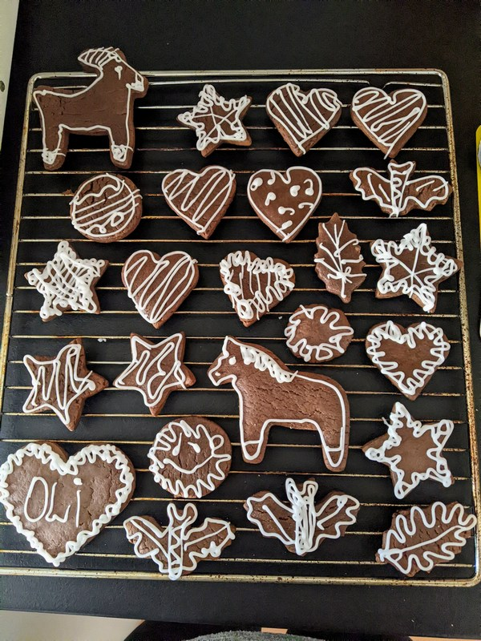

Přestože letos před Vánocema jsem s časem na štíru víc než kdy dřív, konečně u nás doma došlo i na vánoční perníčky. Asi nějaký lepší time management nebo co :-D Recept mám ale samozřejmě na ty, co se nemusí nechat odležet a jsou hned měkký. Není čas ztrácet čas :-D
- 500g hladké mouky
- 1 balíček prášku do perníku
- 3 lžíce kakaa
- 50g čokolády na vaření
- 140g másla(můžete i o něco víc, aby se těsto netrhalo a perníčky při pečení nepopraskaly)
- 120g moučkového cukru
- 2 velká vejce
- 3 lžíce medu
- bílková poleva
Mouku prosejeme společně s kakaem a práškem do perníku. Čokoládu najemno nastrouháme. Máslo ušleháme s cukrem, přidáme vejce, med a čokoládu. Smícháme se sypkými surovinami a vypracujeme hladké těsto. Troubu předehřejeme na 190°C, plech vyložíme pečicím papírem. Těsto rozválíme na plát vysoký 5mm a vykrajujeme z něj perníčky. Pečeme ve vyhřáté troubě asi 6-8 minut. Upečené perníčky ještě horké potřeme mlékem (budou se pak hezky lesknout) a necháme vychladnout. Na druhý den ozdobíme bílkovou polevou. Tu jsem připravila umixováním následujících surovin:
- 1 bílek
- 200g cukru moučka
- 1 polévková lžíce citronové šťávy

Chuťově jsou perníčky vynikající a opravdu krásně měkoučké. Příště ještě zkusím trochu líp vychytat to těsto. A taky vylepšit techniku zdobení perníčků :-D Tak šťastné a veselé!!!